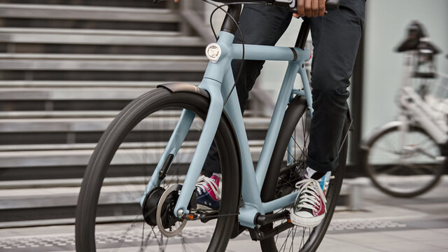

Elektrikli bisiklet üreticisi VanMoof'un iflas ettiği açıklandı. Haber, Hollanda mahkemesinin kararından sonra çalışanlara dahili bir e-postayla duyuruldu.
Bir zamanlar "dünyanın en çok finanse edilen e-bisiklet şirketi" olmakla övünen bağımsız e-bisiklet üreticisi VanMoof, Hollanda'da iflas ettiğini açıkladı. Şirket, geçen hafta mahkeme tarafından atanan yöneticilerle sözde "ödemenin askıya alınması" talebinde bulunmuştu.
VanMoof tarafından yayınlanan bir açıklamaya göre, Amsterdam mahkemesi, Hollandalı VanMoof Global Holding BV, VanMoof BV ve VanMoof Global Support BV tüzel kişiliklerinin ödeme işlemlerinin askıya alınmasını geri çekti ve her bir kuruluşun iflas ettiğini açıkladı. Hollanda dışındaki VanMoof tüzel kişilikleri iflas işlemlerinde değildir. İki yönetici kayyum olarak atandı ve VanMoor'daki durumu ve yeniden başlatma olasılığını değerlendirmeye devam ediyor. Bu, VanMoor'un faaliyetlerine devam edebilmesi için üçüncü bir tarafa bir varlık satışını araştırmayı içerir.
Şu anda alınan karar ile birlikte herhangi bir şirket, şirketin ödenmemiş borcunun sorumluluğunu almak zorunda kalmadan VanMoof'un operasyonlarını ve varlıklarını satın alabilir durumda.
İflas kararı, mahkemenin daha önce VanMoof'u alacaklılardan koruyan iki aylık bir bekleme süresi vermesine rağmen hızlı bir şekilde geldi. Bunun, yöneticilerin bir şirketin mevcut tüm nakit parayı ve finansman ve satış seçeneklerini tükettiğini kolayca görebileceği durumlarda gerçekleşen bir uygulama olarak dikkat çekiyor.
VanMoof sahipleri artık özel parçalar ve özel servis gerektiren e-bisikletlerinin geleceği konusunda daha fazla belirsizlik dönemine girerken şirket, hem müşteriler hem de tedarikçiler / alacaklılar için mevcut durumu özetleyen bir destek belgesi yayınladı. Yeni bir e-bisiklet için yapılan ön ödemenin iadesini isteyen herkes, iflas sebebiyle dava açabilecek.
Şirket tarafından yapılan açıklamada, "Elektrikli bisikletler için uygulamamızı ve sunucularımızı çevrimiçi tutmayı ve gelecek için devam eden hizmetleri güvence altına almayı amaçladığımız için işlevsel ve sürülebilir kalacak" ifadelerini kullandı. Bununla birlikte, tüm onarım çalışmalarının ve parçaların teslimatının şu anda durdurulduğunu ve Hollanda'daki mağazalardaki tamir edilmiş ve tamir edilmemiş e-bisikletlerin sonunda sürücülerin alması için hazır hale getirileceğini doğrulamaktadır. VanMoof varlıkları ve operasyonları satılırsa elbette işler değişecektir.